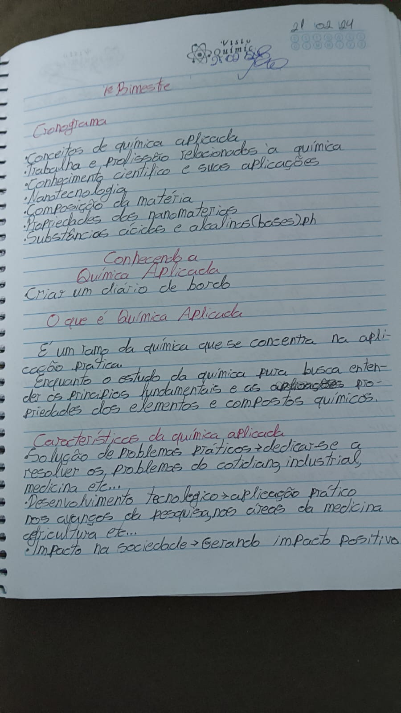

| Tipo / Elemento Analisado | Traços Comportamentais Mapeados | Códigos de Validação | Interpretação do Bloco |
|---|---|---|---|
| MS Equilibrada | Estabilidade (0), Maturidade (1) | P21 | Margem superior controlada, revelando respeito adequado a hierarquias e postura ponderada. |
| ME Regular Equilibrada | Temperança (0), Elevação (11) | P12 | Indica administração consciente do tempo, autocontrole social e busca contínua por aprimoramento. |
| MD Irregular Equilibrada | Flexibilidade (3), Atividade (4) | P28 | Demonstra iniciativa, dinamismo no ambiente de trabalho e facilidade em contornar imprevistos. |
| Organizada | Autoconfiança (2), Organização (2), Planejamento (2), Precisão (4), Erudição (12), Estética (12) | P2 P6 P7 P11 | Estruturação lógica exemplar, clareza metodológica, refino cultural e facilidade em gerir processos. |
| Inconstante | Indisciplina (7), Inconstância (10) | N8 N29 | Pontua oscilações de ânimo ou de ritmo operacional, com risco de quebras temporárias de foco. |
| Desligada Evoluída | Análise (1), Interiorização (9), Dedução (12), Imaginação (12) | P3 P7 | Grande capacidade intelectual voltada para a reflexão profunda, criatividade e conclusões abstratas. |
| Média | Autocontrole (0), Equilíbrio (0), Moderação (0), Estabilidade (0), Coerência (1), Adaptação (3) | P20 P21 P24 P26 | Forte senso de realidade prática, equilíbrio nas relações cotidianas e maturidade adaptativa social. |
| Rígida | Seriedade (0), Autodomínio (0), Concentração (1), Precisão (4), Disciplina (4), Severidade (5) | P2 P9 P15 N25 | Alto nível de exigência pessoal e concentração. O vetor N25 liga-se à inflexibilidade ou excesso de autocrítica. |
| Horizontal | Autocontrole (0), Equilíbrio (0), Estabilidade (0), Concentração (1) | P18 P24 | Firmeza na execução de tarefas, foco inalterado em metas e estabilidade direcional nas atitudes. |
| Perpendicular | Moderação (0), Seriedade (0), Responsabilidade (0), Maturidade (1) | P8 P18 | Rigor ético impecável, compromisso com deveres profissionais assumidos e firmeza moral nas ações. |
| Cursiva | Sensatez (0) | P8 P20 | Espontaneidade e bom senso que guiam as decisões do dia a dia com equilíbrio e maturidade. |
| Arredondada | Maturidade (1), Síntese (2), Iniciativa (2), Adaptação (3), Objetividade (4), Atividade (4) | P14 P17 P20 P26 | Diplomacia nas relações humanas, agilidade na busca por soluções simples e foco prático em resultados rápidos. |
| Fina | Estabilidade (0), Sinceridade (1), Fragilidade (10), Discrição (11), Sensibilidade (11), Intuição (12) | P8 P15 P18 P23 N18 | Fina percepção do ambiente, forte intuição e empatia corporativa, com leve suscetibilidade emocional (N18). |
| Calma | Temperança (0), Moderação (0), Responsabilidade (0), Análise (1), Coerência (1), Conciliação (1), Conformismo (8), Sensibilidade (11) | P5 P8 P20 P21 P23 | Atitude serena e integradora, propensão natural a apaziguar conflitos e forte orientação a processos ordenados. |
| Suave | Estabilidade (0), Moderação (0), Responsabilidade (0), Coerência (1), Sinceridade (1), Empatia (11), Tolerância (11), Sensibilidade (11) | P8 P18 P20 P21 P22 P23 P24 P27 | Excepcional inteligência interpessoal, capacidade genuína de escuta, harmonia na comunicação e facilidade em criar vínculos saudáveis. |